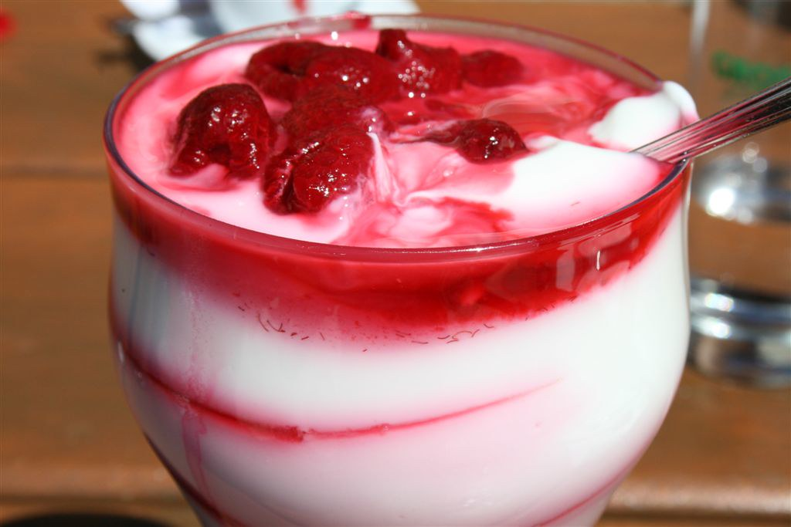
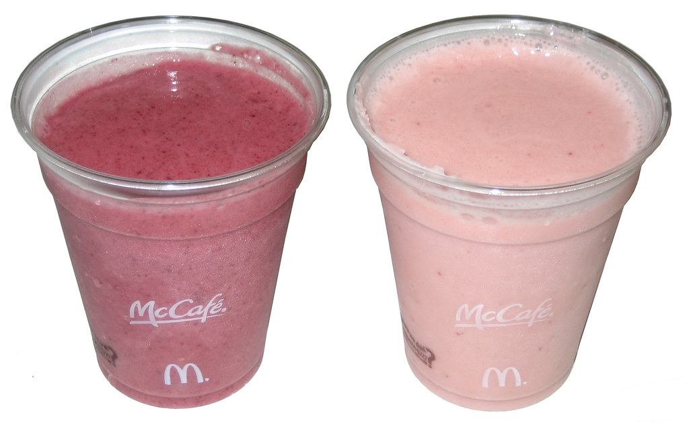

Bananas are a popular fruit for athletes and fitness enthusiasts due to their many benefits for exercise performance. First, bananas are rich in carbohydrates, which provide a quick source of energy to fuel workouts and replenish glycogen stores after exercise. Second, bananas are a good source of potassium, which plays a key role in muscle function and helps prevent cramping and muscle soreness. Additionally, bananas are rich in vitamin B6, which helps convert food into energy and supports the production of red blood cells. Finally, bananas are easy to digest and can provide a quick and convenient pre- or post-workout snack. Overall, adding bananas to your diet can help improve exercise performance, reduce muscle soreness, and support overall health and wellness.

Yogurt is a popular food among athletes and fitness enthusiasts due to its many benefits for exercise performance. Firstly, yogurt is an excellent source of protein, which is important for muscle growth, repair, and recovery after exercise. Additionally, yogurt contains carbohydrates, which provide energy for workouts and help replenish glycogen stores after exercise. Secondly, yogurt is also rich in calcium, which is important for bone health and can help prevent injuries related to exercise. Finally, yogurt contains probiotics, which are beneficial bacteria that can support gut health and boost the immune system, helping to reduce the risk of illness and infections. Overall, incorporating yogurt into your diet can help improve exercise performance, aid in muscle recovery, and support overall health and wellness.

Fruit smoothies are a popular choice for athletes and fitness enthusiasts because they offer a convenient and tasty way to boost nutrition and support exercise performance. Firstly, fruit smoothies are a great source of carbohydrates, which provide the energy needed for physical activity. Secondly, fruit smoothies can be made with a variety of fruits, which are rich in vitamins, minerals, and antioxidants that can support overall health and recovery after exercise. Thirdly, fruit smoothies can also be made with protein sources such as Greek yogurt or protein powder, which can help support muscle growth and recovery. Additionally, fruit smoothies are easy to digest and can be consumed before or after exercise to help fuel workouts and replenish nutrients. Overall, incorporating fruit smoothies into your diet can help improve exercise performance, aid in muscle recovery, and support overall health and wellness.